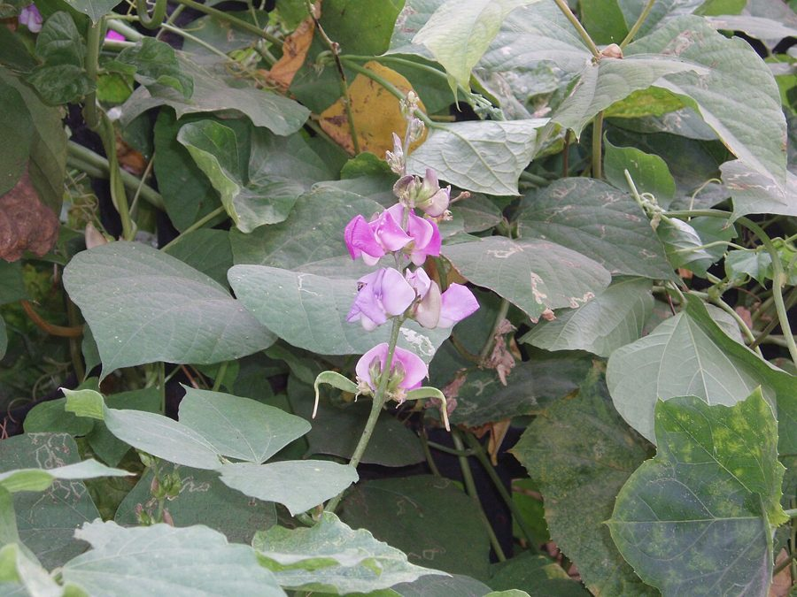

सेमHyacinth Bean
Lablab purpureus · Fabaceae · FLR-0272

- Scientific name वैज्ञानिक नाम
- Lablab purpureus (L.) Sweet
- Family कुल
- Fabaceae
- Hindi हिंदी
- सेम
- Local names स्थानीय नाम
- sem, seem, sem phali, hyacinth bean
- Status here यहाँ की स्थिति
- cultivated
- Movement आवागमन
- Resident, here all year
- Known from कहाँ दर्ज
- Others have published records from the wider Awadh–Purvanchal plain, none yet from Basti–Ayodhya अवध–पूर्वांचल से दूसरों के प्रकाशित अभिलेख, बस्ती–अयोध्या से अभी नहीं
- IUCN IUCN
- not evaluated
- Review समीक्षा
- audited and independently read
When to look कब देखें
Expected mainly in May, June, July, August, September, October, November. मुख्यतः मई, जून, जुलाई, अगस्त, सितंबर, अक्टूबर, नवंबर में अपेक्षित।
Uses and possibilities उपयोग और संभावनाएँ
Drawn from the documented uses in the profile below, where each is labelled traditional, current or a research lead. All uses →
सेम / Hyacinth Bean
Lablab purpureus (L.) Sweet — Fabaceae
सेम — गर्मी-बरसात की एक सुंदर बेल, जिसमें गहरे बैंगनी फूल खिलते हैं। लंबी, सपाट फलियाँ, जो कच्ची सब्जी के रूप में खाई जाती हैं। बीजों (दानों) को भी पकाया जाता है — दाल बनती है। बेल बहुत मजबूत, बहुत उपज देती है, कम रखरखाव। मिट्टी को भी ठीक करती है।
Quick Identification त्वरित पहचान
| Feature | Description |
|---|---|
| Vine | Vigorous, climbing, 3–5 m or taller with support; twining stems |
| Leaves | Trifoliolate, alternate, leaflets ovate, 8–15 cm, dark green |
| Flowers | Large, showy, purple or purple-white, in racemes; fragrant |
| Pods | Long, broad, flattened, 10–20 cm, purple, pink, or green when young; mature purple-brown |
| Seeds | Medium, kidney-shaped, white, black, or purple, 10–12 mm |
Field tip: A vigorous climbing legume with large, showy purple flowers and broad, flattened pods. The pods are distinctive and recognizable. Grows quickly on trellises in warm months from May to November.
Morphology आकारिकी
Biometrics (typical measurements for Lablab purpureus in northern India):
| Measurement | Range |
|---|---|
| Vine length | 3–5 m or more |
| Leaflet length | 8–15 cm |
| Flower diameter | 1.5–2.0 cm |
| Pod length | 10–20 cm |
| Pod width | 2–3 cm |
| Seed length | 10–12 mm |
Stem: Twining, herbaceous, becoming woody toward the base with age. Stems are angular, smooth or slightly hairy, green or tinged purple.
Leaves: Alternate, trifoliolate; terminal leaflet on a longer petiolule. Leaflets ovate, 8–15 cm long, entire, dark green, slightly hairy.
Flowers: Large, showy, 1.5–2.0 cm diameter, purple, pink-purple, or purple-white, borne in axillary racemes. Fragrant. The inflorescence is striking and ornamental.
Pods: Long, broad, flattened, 10–20 cm long, 2–3 cm wide, slightly curved. Immature pods are green or light purple; mature pods are dark purple or brown. The pods are edible when young and tender (5–10 cm).
Seeds: Medium-sized, kidney-shaped, white, black, brown, or purple, with a hilum line, 10–12 mm long.
हिंदी: तने बैंगनी-हरे, घुमावदार। बड़ी पत्तियाँ तीन की। बड़े, गहरे बैंगनी फूल। चौड़ी, लंबी फलियाँ।
Behaviour & Ecology व्यवहार और पारिस्थितिकता
Hyacinth bean is a vigorous, warm-season climbing legume native to Africa and domesticated in Asia. The plant forms nitrogen-fixing associations with rhizobium bacteria. It is highly productive when grown on supports and tolerates warm conditions and moderate drought. The plant is relatively free of major pests and diseases. The striking purple flowers make the plant ornamental as well as productive.
हिंदी: अफ्रीकी पौधा, अब एशिया में खेती की जाती है। गर्मी प्यार करता है। बहुत मजबूत, बहुत उपज। सुंदर फूल भी हैं।
Life Cycle / Phenology जीवन चक्र
| Month / Season | Event |
|---|---|
| April–May | Sowing (after last frost); germination |
| May–June | Rapid vine growth; trellis coverage |
| June–September | Flowering and pod set |
| July–October | Pod growth and maturation; continuous flowering |
| October–November | Late flowering; pod maturity; harvest decline |
From sowing to first flowers: 50–70 days. Flowering continues for months in warm conditions.
हिंदी: अप्रैल-मई में बीज, मई से नवंबर तक फल। लंबे समय तक फूल देता है।
Cultivation Calendar कृषि कैलेंडर
| Stage | Month(s) | Season |
|---|---|---|
| Trellis construction | April | Pre-season |
| Seed sowing | April–May | Kharif onset |
| Germination and seedling establishment | May | Early season |
| Rapid vine growth and trellis coverage | May–June | Monsoon onset |
| Flowering and pod set | June–July | Monsoon |
| Continuous pod growth | July–September | Monsoon to post-monsoon |
| Pod harvesting (tender) | June–October | Continuous |
| Mature pod drying | October–November | Late season |
| Threshing | November–December | Post-harvest |
Associated Species / Interactions संबंधित प्रजातियाँ
- Crop rotation: Follows Paddy in kharif; precedes Wheat.
- Garden companions: Grown on shared trellises with Ridge Gourd and other climbing crops.
Pests and Diseases कीट और रोग
- Pod borers: occasionally; hand-picking.
- Leaf spots in humid seasons: usually minor.
- Root rot: prevent with good drainage.
- Generally hardy.
Agricultural / Human Relevance कृषि प्रासंगिकता
Vegetable use:
The young, tender pods (5–10 cm long) are harvested and cooked as a vegetable, often stir-fried or curried. The texture is firm; the taste is mild and slightly sweet. The mature seeds are dried and cooked as a dal (curry).
Nutritional value:
Young pods are rich in vitamin C, fibre, and minerals. Mature seeds are rich in protein, fibre, and minerals.
Soil improvement:
The nitrogen-fixing capability improves soil fertility for subsequent crops.
Cultivation advantages:
Vigorous growth and high yield; continuous production over months; beautiful flowers; suitable for both subsistence and market cultivation; minimal pest pressure; seeds relatively cheap.
हिंदी: कच्ची फलियाँ सब्जी की तरह खाई जाती हैं। दानों से दाल भी बनती है। सुंदर, पौष्टिक। खूब उपज देता है। मिट्टी को ठीक करता है।
Expected Locally स्थानीय रूप से अपेक्षित
Not a field record. Written from published accounts for eastern Uttar Pradesh. No confirmed local sighting yet — if you have seen it, that is what the atlas needs.
अभी तक स्थानीय पुष्टि नहीं। यह विवरण प्रकाशित स्रोतों से है, किसी अवलोकन से नहीं।
Expected as a cultivated vegetable vine on trellises throughout Basti district from May to November. The striking purple flowers make the plant conspicuous in vegetable plots and gardens. Fresh pods are sold in markets during the monsoon and post-monsoon seasons.
Distribution वितरण
Global range: Native to Africa; cultivated throughout tropical Africa, Asia, Americas.
In India: Widely cultivated; particularly common in the Indo-Gangetic plain and South India.
In Uttar Pradesh: Cultivated throughout; an important kharif vegetable legume.
In Basti district / eastern UP: Cultivated in vegetable plots and gardens; common in local markets.
Research Questions शोध प्रश्न
Anyone can investigate these | कोई भी इन प्रश्नों की जाँच कर सकता है
- How much pod biomass can one plant produce over one season? — Biomass collection trial.
- Do farmers grow specific varieties for tender pods vs. mature seed harvest? — Farmer survey.
- How does yield (pods or seeds) compare to other legumes on a similar trellis? — Comparative cultivation trial.
- What is the local market price for fresh pods and dry seeds? — Bazaar survey.
- Can hyacinth bean intercrop with another climbing vegetable without yield loss? — Intercrop trial.
Similar Species मिलती-जुलती प्रजातियाँ
| Species | How to tell apart | हिंदी |
|---|---|---|
| Ridge Gourd (Luffa acutangula) | Leaves deeply lobed; yellow flowers; spiky fruits; different family (Cucurbitaceae) | कटी पत्तियाँ, पीले फूल |
| Ivy Gourd (Coccinia grandis) | Smaller leaves and fruits; red fruits; different taste | छोटी पत्तियाँ, लाल फल |
Field rule: A vigorous climbing legume with large trifoliolate leaves, showy purple flowers, and large flattened pods is hyacinth bean.
Taxonomy & Classification वर्गीकरण
Original description. Originally Dolichos purpureus L., later reclassified as Lablab purpureus (L.) Sweet.
Subspecies. Multiple subspecies exist; subsp. purpureus is common in South Asia.
Family and order placement. Fabaceae, order Fabales. Genus Lablab comprises a few species, mostly African.
Phylogenetic notes. Lablab purpureus is the only commonly cultivated species in the genus.
IUCN status rationale. Not evaluated. Widely cultivated.
Photo Gallery फोटो गैलरी
Photos needed आवश्यक फोटो
- [ ] Vine on trellis with flowering and pod stage (पूरी बेल)
- [ ] Flowers showing large purple blooms (फूल)
- [ ] Young tender pods ready for harvest (कच्ची फलियाँ)
- [ ] Mature dry seeds (सूखी दानें)
No photos yet — add field photos to media/species/hyacinth_bean/ and run node scripts/sync_photos.js.
References संदर्भ
- Linnaeus, C. (1753). Species Plantarum. [original description]
- Indian Council of Agricultural Research (2021). Handbook of Agriculture. ICAR, New Delhi.
- Chadha, K.L. (2010). Handbook of Horticulture. ICAR, New Delhi.
- Botanical Survey of India. Flora of Uttar Pradesh. BSI, Kolkata.
- Singh, U. & Singh, B. (1992). Nutritional quality of pulses. Journal of Food Science and Technology 29(1): 24–32.
- GBIF Occurrence Data — Lablab purpureus, India (2020–2026).
Source file: species/flora/crops/hyacinth_bean.md